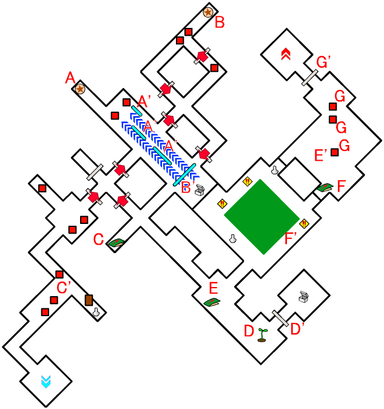
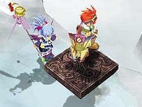
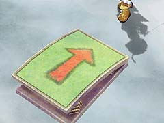
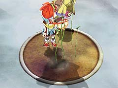
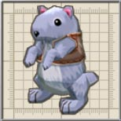
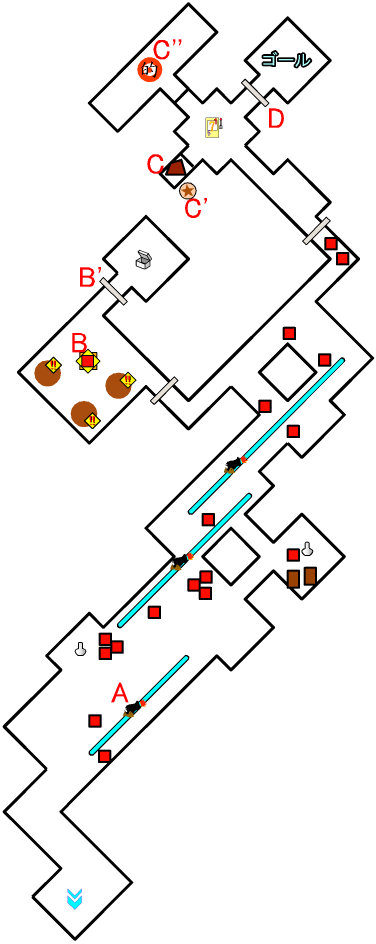
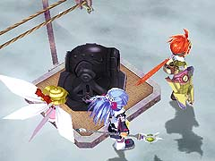
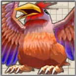
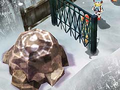

目次 > ゲームについて > 日本Falcom 攻略 > ZWEI II > ダンジョン一覧 > 忍びの修行場 (LV.17)
らんの眼
ZWEI II (ツヴァイ 2、ZWEI II Plus)
| 概要 | 情報 | 攻略チャート |
| フード交換 | ペットについて | ボス戦 |
| 敵キャラ一覧 | ハンターランク | G-コロッセオ |
| アイテム一覧 | ガジェット一覧 | トレジャー一覧 |
| ダンジョン一覧 | クリアデータ特典 | Plusの追加要素 |
| ZWEI II攻略へ | 目次へ戻る |
| 第1 階層 |
 |
A 地点のボタンを押すと、A' 地点に敵が出現し、A'' 地点の扉が開きます |
|
B 地点のボタンを押すと、B' 地点に敵が出現し、B'' 地点の扉が開きます |
| 第2 階層 |

|
A 地点のボタンを押すと、A' 地点にリフトが出現します。 このリフトを使うことで、ダンジョンの先へ進めるようになります。  (リフト) |
|
B 地点のボタンを押すと、B' 地点にリフトが出現します。 |
|  | C 地点のジャンプ台に乗ると、C' 地点へ移動できます。 |
|  | D 地点には、土の上に植物の芽が見えます。 この土の上でジャンプすると、その回数に応じて植物が伸び、最大まで植物が伸びると、D' 地点の扉が開きます。 |
| E 地点のジャンプ台に乗ると、E' 地点へ移動できます。 | |
| F 地点のジャンプ台に乗ると、F' 地点へ移動できます。 | |
|  | G の印が付いている敵を全て倒すと、G' 地点の扉が開きます。 |
| 第3 階層 |

|  | この階層にはリフトの上に乗った大砲がいくつもあります。 爆弾を設置して壊すのは至難の業なので、無視した方がいいでしょう。 |
|  | B 地点では中ボスの「おんせんすざく」がいます。 「おんせんすざく」を倒すと、B' 地点の扉が開きます。 |
|  | C 地点の岩を爆弾で壊すと、岩の下からスイッチが現れます。このスイッチを押すと、C'' 地点にある的が移動を開始します。 的に攻撃を当てると、D 地点の扉が開きます。的への攻撃は、スバルの手裏剣や、アルウェンの魔法を連射していれば何とかなります。 |
| 概要 | 情報 | 攻略チャート |
| フード交換 | ペットについて | ボス戦 |
| 敵キャラ一覧 | ハンターランク | G-コロッセオ |
| アイテム一覧 | ガジェット一覧 | トレジャー一覧 |
| ダンジョン一覧 | クリアデータ特典 | Plusの追加要素 |
| ページの上部へ | ZWEI II 攻略へ | 目次へ戻る |